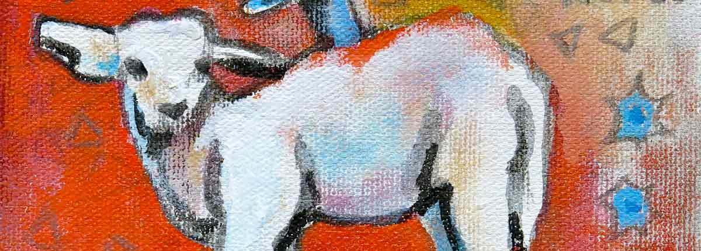

April 23: Music by Firebelly 6pm
April 30: Art by Timothy Michael Duke 8pm
New barrel-blended Strong Irish Red Style Ale has pleasant toasty and toffee notes, subtle wood and vanilla nuances..
Heller Highwater is a pale straw coloured Bavarian Lager. Brewed with German noble hops and genuine Munich yeast.
A multi-discipline contemporary artist who approaches abstract painting as an expressive and layered exploration of surface, form and colour.
Timothy enjoys reusing materials and repurposing them. The material transformation is habitual and time consuming, yet equally rewarding.